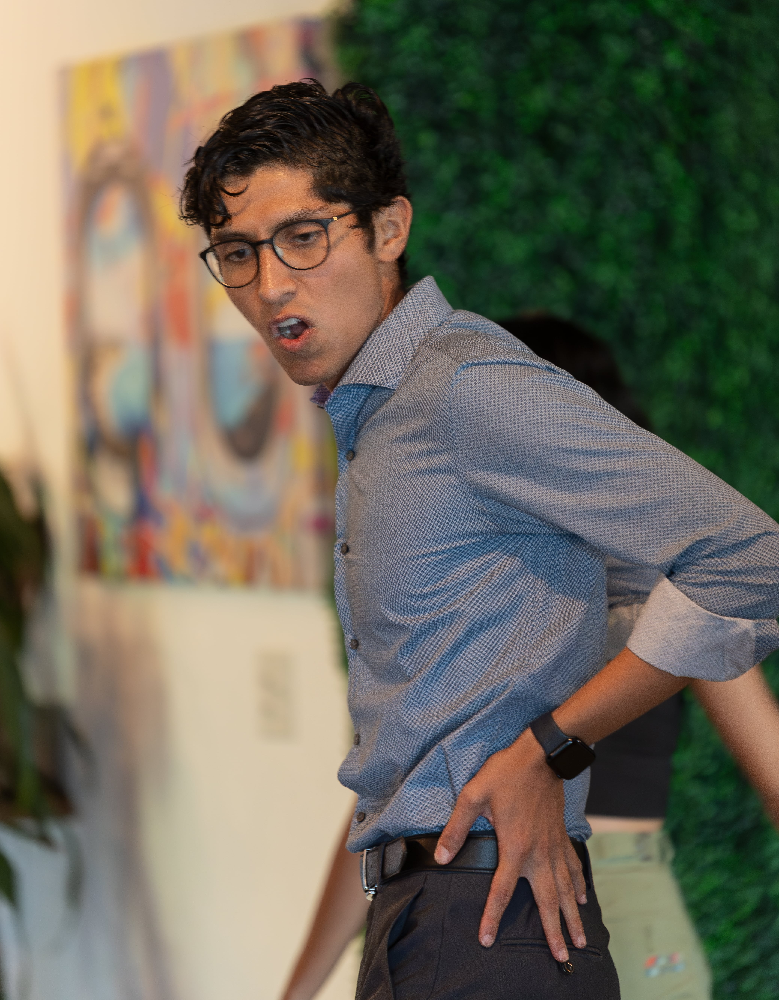
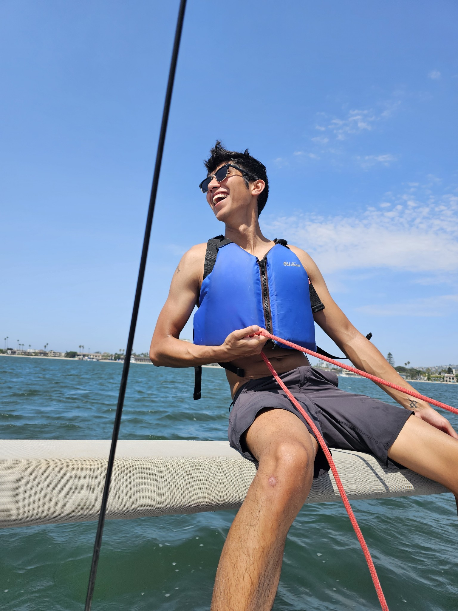
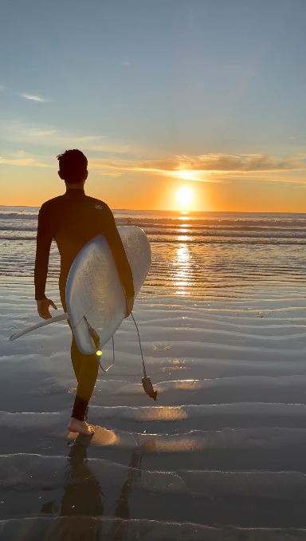

Performance
Actor, improviser, and clown work rooted in clarity, presence, and emotional accuracy.
Los Angeles actor
Bilingual Mexican American actor, writer, and improviser creating emotionally precise, playful work for screen and stage.
Formerly a product engineer at Meta and Lyft, now focused on performance, writing, and collaborative storytelling.
About
Luis Meraz is an actor drawn to stories with nerve, humor, and heart. His background in technology sharpened his discipline; performance gave that discipline a pulse. Today he works across acting, writing, and live collaboration with a style that is warm, specific, and alert to detail.
Actor, improviser, and clown work rooted in clarity, presence, and emotional accuracy.
Develops original material for theater and short-form work with a taste for intimacy over noise.
Produces theater and shorts through Do Tell, building work that invites audiences closer.
Surfs, sails, DJs, and hikes with Manny. The page keeps that in the background where it belongs.
Featured Media
A quick view of on-camera presence, tone, and dramatic range.
Primary reel
The main entry point for casting and collaborators who need a fast sense of range and screen presence.
Secondary reel
Supporting material for a closer look at dramatic texture and scene work.
Resume
The full resume remains the source of truth. This page keeps the summary short and gets you to the file quickly.
Selected Images
Four supporting images that broaden the picture without taking over the page.



Contact
Reach out directly for availability, materials, and project inquiries.
contact@luismeraz.com